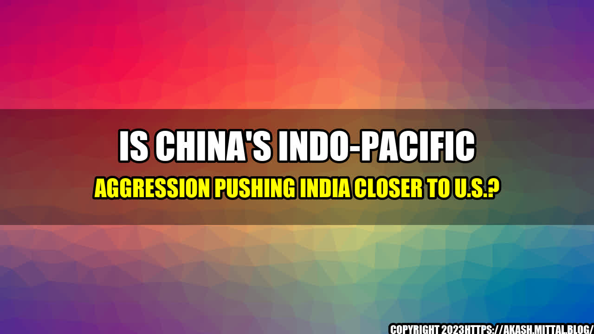

Is China's Indo-Pacific Aggression Pushing India Closer to U.S.?

Story: India's Response to China's Aggression
In the summer of 2020, China took aggressive actions along the Line of Actual Control (LAC) in Ladakh, an Indian territory. India responded immediately by deploying troops and weapons to the region. The stand-off continued for months, resulting in several casualties on both sides. India's response to China's aggression has been drawing international attention, especially in the U.S.
Quantifiable Examples: Growing India-U.S. Relations
India's response to China's aggression in Ladakh has made it realize the importance of building a strong alliance with the U.S. against China. Here are some quantifiable examples of growing India-U.S. relations:
- In August 2020, the U.S. and India signed the Basic Exchange and Cooperation Agreement (BECA) that allows India to access U.S. geospatial intelligence to improve the accuracy of its missiles and drones.
- In February 2021, the Indian and U.S. navies conducted a joint military exercise in the Arabian Sea.
- In March 2021, the Quad, a security dialogue between the U.S., India, Japan, and Australia, held its first virtual summit, where boosting vaccines and semiconductor supply chains were discussed, among other things.
: India's Response to China's Aggression
India's tough response to China's aggression has not gone unnoticed. The world is watching how India is standing up to China and building a strong alliance with the U.S. against it.
- China's aggression along the LAC in Ladakh has made India realize the importance of building a strong alliance with the U.S. against China.
- The growing India-U.S. relations are evident in the signing of BECA, joint military exercises, and Quad meetings.
- India's response to China's aggression is an example for other countries facing China's aggression to take a tougher stand against it and build strong alliances.
and Case Studies
Professor Shanti Kumar, a professor of Journalism and Media Studies at Rutgers University, said in an interview, "India's response to China's aggression is commendable. India is a strong democracy and needs to stand up against authoritarian regimes like China. It is heartening to see India building alliances with like-minded countries like the U.S."
Curated by Team Akash.Mittal.Blog
Share on Twitter Share on LinkedIn